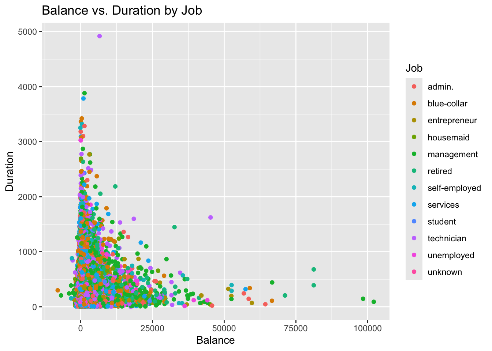
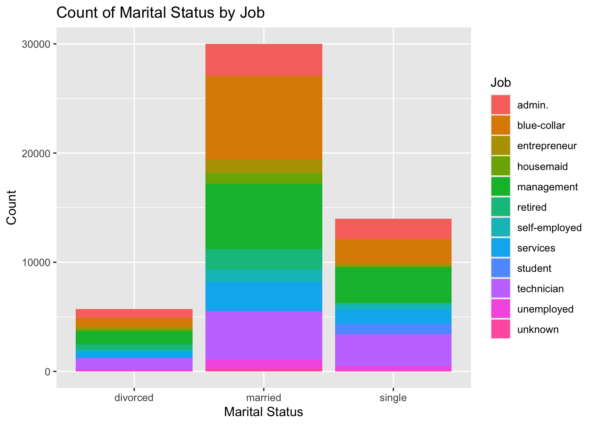
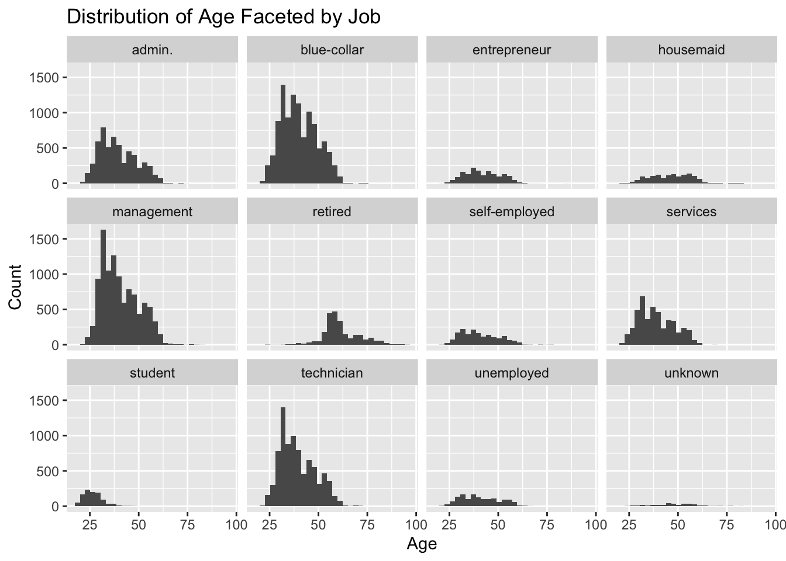
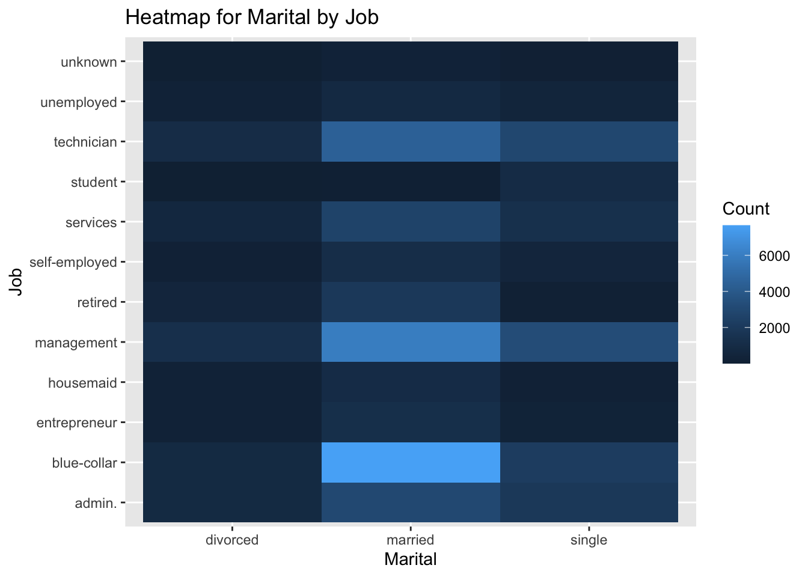
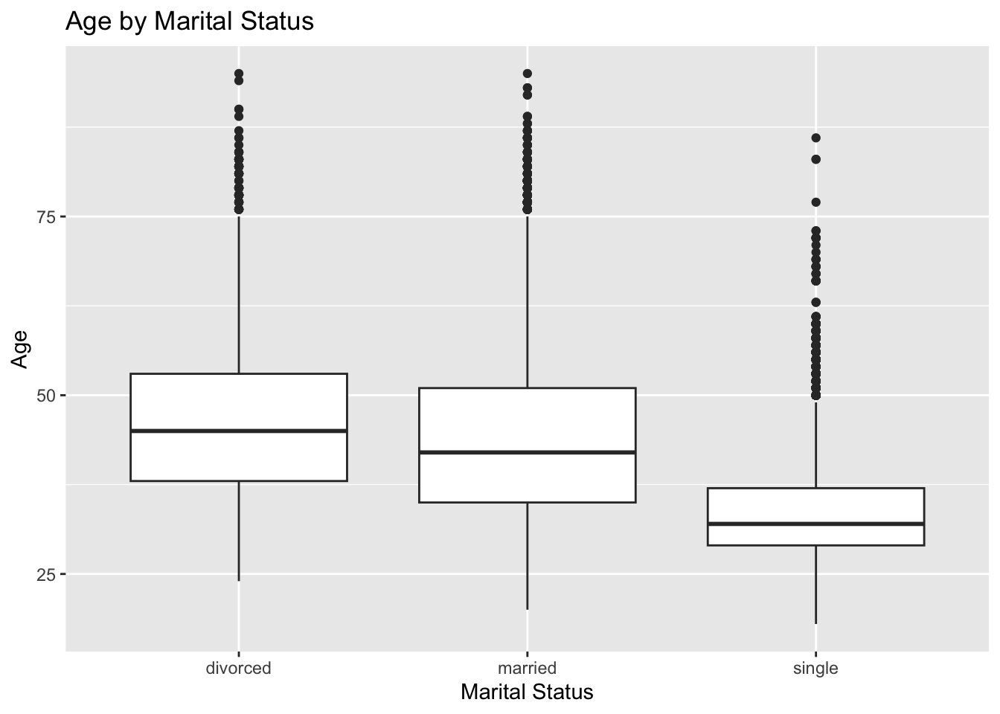

── Attaching core tidyverse packages ──────────────────────── tidyverse 2.0.0 ──
✔ dplyr 1.1.4 ✔ readr 2.1.5
✔ forcats 1.0.0 ✔ stringr 1.5.1
✔ ggplot2 3.5.2 ✔ tibble 3.2.1
✔ lubridate 1.9.4 ✔ tidyr 1.3.1
✔ purrr 1.0.4
── Conflicts ────────────────────────────────────────── tidyverse_conflicts() ──
✖ dplyr::filter() masks stats::filter()
✖ dplyr::lag() masks stats::lag()
ℹ Use the conflicted package (<http://conflicted.r-lib.org/>) to force all conflicts to become errors
Data Gathering
In this section, we are simply going to read in the data from both the train and test files. Once we have the data, we will then transform the data types as needed to cast them to the correct tye. Once we finish this, we will save the tibble as an RDS for our Shiny App.
# First we can load in the datatrain <-read.csv2("data/train.csv")test <-read.csv2("data/test.csv")# Now we can combine it per the project instructionsbank_data <-bind_rows(train, test)# Next lets make some adjustments to make it more usablebank_data <- bank_data |># We can use mutate to set the correct data typesmutate(job =as.factor(job),marital =as.factor(marital),education =as.factor(education),default =as.factor(default),housing =as.factor(housing),loan =as.factor(loan),contact =as.factor(contact),month =as.factor(month),poutcome =as.factor(poutcome),success =as.factor(y),age =as.integer(age),balance =as.integer(balance),day =as.integer(day),duration =as.integer(duration),campaign =as.integer(campaign),pdays =as.integer(pdays),previous =as.integer(previous) ) |># Since we created a new column "success" out of the indescript y column# we can drop the old oneselect(-y) |># Lets also reorder the month factor so it shows up in ordermutate(month =fct_relevel(month, "jan", "feb", "mar", "apr", "may", "jun", "jul", "aug", "sep", "oct", "nov", "dec"))# Now, we can save it as an RDS for latersaveRDS(bank_data, "data/full.rds")
Contingency Tables
Now that the data is loaded and the types are correct, we can move on the the contingency tables.
One-Way Contingency Tables
# First lets get all of the column names that are factors and intsfactor_columns <- bank_data |>select(where(is.factor)) |>names()int_columns <- bank_data |>select(where(is.integer)) |>names()# For one-way, we can simply loop through the factor columns to get the tablesfor (factor in factor_columns) {cat("\nFactor:", factor)print(table(bank_data[[factor]]))}
Factor: job
admin. blue-collar entrepreneur housemaid management
5649 10678 1655 1352 10427
retired self-employed services student technician
2494 1762 4571 1022 8365
unemployed unknown
1431 326
Factor: marital
divorced married single
5735 30011 13986
Factor: education
primary secondary tertiary unknown
7529 25508 14651 2044
Factor: default
no yes
48841 891
Factor: housing
no yes
22043 27689
Factor: loan
no yes
41797 7935
Factor: contact
cellular telephone unknown
32181 3207 14344
Factor: month
jan feb mar apr may jun jul aug sep oct nov dec
1551 2871 526 3225 15164 5872 7601 6880 631 818 4359 234
Factor: poutcome
failure other success unknown
5391 2037 1640 40664
Factor: success
no yes
43922 5810
Two-Way Contingency Tables
# For two-way contingency tables, we can use a nested for loop# The outer loop will loop along the sequence of the columns until the second to lastfor (i inseq_along(factor_columns)[-length(factor_columns)]) {# The inner look will loop through columns after the selected column to the lastfor (j inseq.int(i +1, length(factor_columns))) {# Since i and j are integers, we need to get the name of the column factor1 <- factor_columns[i] factor2 <- factor_columns[j]# Now we can simply printcat("\nFactors:", factor1, "x", factor2, "\n")print(table(bank_data[[factor1]], bank_data[[factor2]])) }}
Factors: job x marital
divorced married single
admin. 819 2959 1871
blue-collar 829 7661 2188
entrepreneur 195 1202 258
housemaid 197 996 159
management 1230 5957 3240
retired 468 1907 119
self-employed 155 1120 487
services 611 2643 1317
student 6 64 952
technician 1014 4463 2888
unemployed 193 806 432
unknown 18 233 75
Factors: job x education
primary secondary tertiary unknown
admin. 226 4612 623 188
blue-collar 4127 5895 161 495
entrepreneur 209 600 759 87
housemaid 684 423 195 50
management 333 1237 8588 269
retired 875 1089 397 133
self-employed 145 653 921 43
services 370 3820 218 163
student 46 555 242 179
technician 173 5749 2179 264
unemployed 283 796 321 31
unknown 58 79 47 142
Factors: job x default
no yes
admin. 5569 80
blue-collar 10463 215
entrepreneur 1593 62
housemaid 1328 24
management 10249 178
retired 2465 29
self-employed 1725 37
services 4489 82
student 1018 4
technician 8220 145
unemployed 1398 33
unknown 324 2
Factors: job x housing
no yes
admin. 2165 3484
blue-collar 2935 7743
entrepreneur 692 963
housemaid 915 437
management 5246 5181
retired 1953 541
self-employed 909 853
services 1520 3051
student 753 269
technician 3826 4539
unemployed 830 601
unknown 299 27
Factors: job x loan
no yes
admin. 4567 1082
blue-collar 8838 1840
entrepreneur 1258 397
housemaid 1187 165
management 9054 1373
retired 2153 341
self-employed 1503 259
services 3661 910
student 1009 13
technician 6937 1428
unemployed 1309 122
unknown 321 5
Factors: job x contact
cellular telephone unknown
admin. 3670 320 1659
blue-collar 5647 667 4364
entrepreneur 1059 100 496
housemaid 814 168 370
management 7732 522 2173
retired 1515 447 532
self-employed 1200 103 459
services 2734 256 1581
student 759 108 155
technician 5920 355 2090
unemployed 976 110 345
unknown 155 51 120
Factors: job x month
jan feb mar apr may jun jul aug sep oct nov dec
admin. 201 330 82 451 1907 636 956 392 84 119 465 26
blue-collar 204 440 28 830 4811 1403 1536 660 37 65 652 12
entrepreneur 42 97 2 75 468 230 337 95 14 13 279 3
housemaid 33 57 14 56 163 294 310 285 16 30 88 6
management 322 599 159 611 2395 1029 1481 2183 183 197 1211 57
retired 100 181 76 159 391 330 387 428 102 147 150 43
self-employed 58 114 16 93 412 251 277 237 14 28 256 6
services 140 227 21 307 1766 567 861 292 21 23 330 16
student 44 100 43 96 272 94 79 120 57 41 57 19
technician 273 467 62 472 2253 767 1147 2012 67 118 692 35
unemployed 114 245 19 67 294 173 194 103 25 24 163 10
unknown 20 14 4 8 32 98 36 73 11 13 16 1
Factors: job x poutcome
failure other success unknown
admin. 702 267 227 4453
blue-collar 1169 438 162 8909
entrepreneur 179 46 23 1407
housemaid 107 30 33 1182
management 1158 442 410 8417
retired 261 88 187 1958
self-employed 181 70 58 1453
services 481 193 94 3803
student 127 89 91 715
technician 880 329 273 6883
unemployed 124 42 68 1197
unknown 22 3 14 287
Factors: job x success
no yes
admin. 4960 689
blue-collar 9901 777
entrepreneur 1517 138
housemaid 1229 123
management 8995 1432
retired 1924 570
self-employed 1555 207
services 4164 407
student 734 288
technician 7442 923
unemployed 1216 215
unknown 285 41
Factors: marital x education
primary secondary tertiary unknown
divorced 831 3085 1626 193
married 5772 15197 7765 1277
single 926 7226 5260 574
Factors: marital x default
no yes
divorced 5589 146
married 29527 484
single 13725 261
Factors: marital x housing
no yes
divorced 2530 3205
married 13065 16946
single 6448 7538
Factors: marital x loan
no yes
divorced 4724 1011
married 24898 5113
single 12175 1811
Factors: marital x contact
cellular telephone unknown
divorced 3647 305 1783
married 18902 2221 8888
single 9632 681 3673
Factors: marital x month
jan feb mar apr may jun jul aug sep oct nov dec
divorced 181 327 54 292 1814 737 971 643 55 88 549 24
married 780 1540 275 1919 8762 3665 4796 4547 347 467 2781 132
single 590 1004 197 1014 4588 1470 1834 1690 229 263 1029 78
Factors: marital x poutcome
failure other success unknown
divorced 608 246 162 4719
married 3217 1099 918 24777
single 1566 692 560 11168
Factors: marital x success
no yes
divorced 5036 699
married 26979 3032
single 11907 2079
Factors: education x default
no yes
primary 7392 137
secondary 25004 504
tertiary 14436 215
unknown 2009 35
Factors: education x housing
no yes
primary 3252 4277
secondary 10040 15468
tertiary 7610 7041
unknown 1141 903
Factors: education x loan
no yes
primary 6411 1118
secondary 20789 4719
tertiary 12693 1958
unknown 1904 140
Factors: education x contact
cellular telephone unknown
primary 3911 797 2821
secondary 16134 1506 7868
tertiary 11051 695 2905
unknown 1085 209 750
Factors: education x month
jan feb mar apr may jun jul aug sep oct nov dec
primary 178 375 54 462 2579 1226 1201 741 78 109 502 24
secondary 778 1434 207 1739 8719 2830 4065 2948 248 345 2085 110
tertiary 507 947 237 909 3251 1465 2036 2999 258 317 1641 84
unknown 88 115 28 115 615 351 299 192 47 47 131 16
Factors: education x poutcome
failure other success unknown
primary 704 266 148 6411
secondary 2842 1089 735 20842
tertiary 1649 609 666 11727
unknown 196 73 91 1684
Factors: education x success
no yes
primary 6874 655
secondary 22813 2695
tertiary 12462 2189
unknown 1773 271
Factors: default x housing
no yes
no 21632 27209
yes 411 480
Factors: default x loan
no yes
no 41232 7609
yes 565 326
Factors: default x contact
cellular telephone unknown
no 31634 3178 14029
yes 547 29 315
Factors: default x month
jan feb mar apr may jun jul aug sep oct nov dec
no 1533 2830 526 3213 14899 5753 7361 6775 630 818 4269 234
yes 18 41 0 12 265 119 240 105 1 0 90 0
Factors: default x poutcome
failure other success unknown
no 5351 2017 1638 39835
yes 40 20 2 829
Factors: default x success
no yes
no 43092 5749
yes 830 61
Factors: housing x loan
no yes
no 18881 3162
yes 22916 4773
Factors: housing x contact
cellular telephone unknown
no 16116 1909 4018
yes 16065 1298 10326
Factors: housing x month
jan feb mar apr may jun jul aug sep oct nov dec
no 970 1647 402 947 1869 3406 3918 5653 487 636 1921 187
yes 581 1224 124 2278 13295 2466 3683 1227 144 182 2438 47
Factors: housing x poutcome
failure other success unknown
no 1578 705 1129 18631
yes 3813 1332 511 22033
Factors: housing x success
no yes
no 18388 3655
yes 25534 2155
Factors: loan x contact
cellular telephone unknown
no 26932 2751 12114
yes 5249 456 2230
Factors: loan x month
jan feb mar apr may jun jul aug sep oct nov dec
no 1321 2450 499 2835 12982 5076 5286 6209 598 756 3563 222
yes 230 421 27 390 2182 796 2315 671 33 62 796 12
Factors: loan x poutcome
failure other success unknown
no 4548 1748 1552 33949
yes 843 289 88 6715
Factors: loan x success
no yes
no 36514 5283
yes 7408 527
Factors: contact x month
jan feb mar apr may jun jul aug sep oct nov dec
cellular 1394 2561 455 3003 5860 802 6343 6557 508 621 3885 192
telephone 147 297 63 216 509 88 954 266 69 142 417 39
unknown 10 13 8 6 8795 4982 304 57 54 55 57 3
Factors: contact x poutcome
failure other success unknown
cellular 4976 1808 1499 23898
telephone 380 197 127 2503
unknown 35 32 14 14263
Factors: contact x success
no yes
cellular 27396 4785
telephone 2773 434
unknown 13753 591
Factors: month x poutcome
failure other success unknown
jan 320 165 73 993
feb 584 266 151 1870
mar 80 41 67 338
apr 809 280 144 1992
may 1864 656 256 12388
jun 144 81 124 5523
jul 123 49 108 7321
aug 259 97 223 6301
sep 127 68 143 293
oct 165 65 142 446
nov 871 240 151 3097
dec 45 29 58 102
Factors: month x success
no yes
jan 1393 158
feb 2392 479
mar 257 269
apr 2592 633
may 14146 1018
jun 5271 601
jul 6913 688
aug 6113 767
sep 345 286
oct 458 360
nov 3917 442
dec 125 109
Factors: poutcome x success
no yes
failure 4710 681
other 1692 345
success 579 1061
unknown 36941 3723
Data Summaries
Now that the contingency tables are completed, we can turn our attention to creating summaries for our quantitative variables at the levels of categorical variables.
# We can iterate though out factor columns and numeric columns in a nested for # loop to create a summary table for each categoryfor (factor in factor_columns) {for (int_var in int_columns) { int_by_cat <- bank_data |># first we group by the factorgroup_by(.data[[factor]]) |># then we summarize the current int_var for that factorsummarise(n =n(),mean =mean(.data[[int_var]]),median =median(.data[[int_var]]),sd =sd(.data[[int_var]]) )# Finally, we printcat("\n", factor, "by", int_var, "\n")print(int_by_cat) }}
job by age
# A tibble: 12 × 5
job n mean median sd
<fct> <int> <dbl> <dbl> <dbl>
1 admin. 5649 39.3 38 9.37
2 blue-collar 10678 40.1 39 9.03
3 entrepreneur 1655 42.2 41 9.04
4 housemaid 1352 46.5 47 10.5
5 management 10427 40.5 38 9.37
6 retired 2494 61.6 59 9.56
7 self-employed 1762 40.6 39 9.63
8 services 4571 38.7 37 9.06
9 student 1022 26.6 26 4.88
10 technician 8365 39.3 37 8.92
11 unemployed 1431 41.0 40 9.77
12 unknown 326 47.7 47 10.7
job by balance
# A tibble: 12 × 5
job n mean median sd
<fct> <int> <dbl> <dbl> <dbl>
1 admin. 5649 1144. 399 2620.
2 blue-collar 10678 1079. 389 2223.
3 entrepreneur 1655 1534. 353 4182.
4 housemaid 1352 1450. 395 3154.
5 management 10427 1764. 573 3775.
6 retired 2494 2015. 771 4550.
7 self-employed 1762 1621. 520. 3578.
8 services 4571 1007. 335 2192.
9 student 1022 1401. 502. 2452.
10 technician 8365 1260. 424 2556.
11 unemployed 1431 1483. 527 3045.
12 unknown 326 1741. 677 2870.
job by day
# A tibble: 12 × 5
job n mean median sd
<fct> <int> <dbl> <dbl> <dbl>
1 admin. 5649 15.6 16 8.44
2 blue-collar 10678 15.4 15 7.91
3 entrepreneur 1655 15.7 17 7.87
4 housemaid 1352 15.9 16 8.08
5 management 10427 16.1 17 8.36
6 retired 2494 15.5 15 8.32
7 self-employed 1762 16.0 17 8.20
8 services 4571 15.6 16 8.28
9 student 1022 15.0 14.5 8.78
10 technician 8365 16.4 17 8.52
11 unemployed 1431 15.6 15 9.42
12 unknown 326 14.8 14 8.76
job by duration
# A tibble: 12 × 5
job n mean median sd
<fct> <int> <dbl> <dbl> <dbl>
1 admin. 5649 246. 173 240.
2 blue-collar 10678 264. 188 261.
3 entrepreneur 1655 259. 181 255.
4 housemaid 1352 250. 166. 261.
5 management 10427 255. 174 257.
6 retired 2494 287. 204 262.
7 self-employed 1762 268. 178 281.
8 services 4571 260. 186 260.
9 student 1022 247. 181 227.
10 technician 8365 253. 176 256.
11 unemployed 1431 290. 200 296.
12 unknown 326 235. 165 223.
job by campaign
# A tibble: 12 × 5
job n mean median sd
<fct> <int> <dbl> <dbl> <dbl>
1 admin. 5649 2.58 2 2.94
2 blue-collar 10678 2.82 2 3.27
3 entrepreneur 1655 2.78 2 2.84
4 housemaid 1352 2.79 2 2.73
5 management 10427 2.87 2 3.20
6 retired 2494 2.36 2 2.29
7 self-employed 1762 2.90 2 3.30
8 services 4571 2.73 2 3.06
9 student 1022 2.31 2 2.36
10 technician 8365 2.89 2 3.23
11 unemployed 1431 2.45 2 2.78
12 unknown 326 3.22 2 3.64
job by pdays
# A tibble: 12 × 5
job n mean median sd
<fct> <int> <dbl> <dbl> <dbl>
1 admin. 5649 48.0 -1 109.
2 blue-collar 10678 43.8 -1 109.
3 entrepreneur 1655 32.5 -1 88.3
4 housemaid 1352 21.9 -1 71.1
5 management 10427 38.9 -1 97.6
6 retired 2494 37.2 -1 86.5
7 self-employed 1762 34.1 -1 86.9
8 services 4571 41.5 -1 104.
9 student 1022 56.1 -1 106.
10 technician 8365 37.4 -1 95.1
11 unemployed 1431 34.4 -1 95.9
12 unknown 326 22.8 -1 82.6
job by previous
# A tibble: 12 × 5
job n mean median sd
<fct> <int> <dbl> <dbl> <dbl>
1 admin. 5649 0.669 0 1.99
2 blue-collar 10678 0.504 0 1.85
3 entrepreneur 1655 0.473 0 1.76
4 housemaid 1352 0.371 0 1.35
5 management 10427 0.657 0 3.39
6 retired 2494 0.634 0 1.72
7 self-employed 1762 0.556 0 1.78
8 services 4571 0.496 0 1.61
9 student 1022 0.954 0 2.37
10 technician 8365 0.575 0 1.94
11 unemployed 1431 0.468 0 1.55
12 unknown 326 0.340 0 1.12
marital by age
# A tibble: 3 × 5
marital n mean median sd
<fct> <int> <dbl> <dbl> <dbl>
1 divorced 5735 45.8 45 10.1
2 married 30011 43.4 42 10.3
3 single 13986 33.7 32 7.59
marital by balance
# A tibble: 3 × 5
marital n mean median sd
<fct> <int> <dbl> <dbl> <dbl>
1 divorced 5735 1174. 350 2867.
2 married 30011 1429. 475 3145.
3 single 13986 1315. 440 2876.
marital by day
# A tibble: 3 × 5
marital n mean median sd
<fct> <int> <dbl> <dbl> <dbl>
1 divorced 5735 15.8 16 8.25
2 married 30011 15.9 16 8.22
3 single 13986 15.7 16 8.55
marital by duration
# A tibble: 3 × 5
marital n mean median sd
<fct> <int> <dbl> <dbl> <dbl>
1 divorced 5735 264. 179 265.
2 married 30011 254. 178 253.
3 single 13986 267. 188 265.
marital by campaign
# A tibble: 3 × 5
marital n mean median sd
<fct> <int> <dbl> <dbl> <dbl>
1 divorced 5735 2.63 2 2.79
2 married 30011 2.84 2 3.15
3 single 13986 2.66 2 3.10
marital by pdays
# A tibble: 3 × 5
marital n mean median sd
<fct> <int> <dbl> <dbl> <dbl>
1 divorced 5735 40.8 -1 102.
2 married 30011 38.0 -1 97.4
3 single 13986 44.5 -1 105.
marital by previous
# A tibble: 3 × 5
marital n mean median sd
<fct> <int> <dbl> <dbl> <dbl>
1 divorced 5735 0.541 0 1.78
2 married 30011 0.553 0 2.41
3 single 13986 0.643 0 2.06
education by age
# A tibble: 4 × 5
education n mean median sd
<fct> <int> <dbl> <dbl> <dbl>
1 primary 7529 46.0 45 11.4
2 secondary 25508 40.0 38 10.2
3 tertiary 14651 39.6 37 9.86
4 unknown 2044 44.6 45 12.1
education by balance
# A tibble: 4 × 5
education n mean median sd
<fct> <int> <dbl> <dbl> <dbl>
1 primary 7529 1265. 403 2798.
2 secondary 25508 1159. 392. 2546.
3 tertiary 14651 1760. 578 3806.
4 unknown 2044 1543. 570 3137.
education by day
# A tibble: 4 × 5
education n mean median sd
<fct> <int> <dbl> <dbl> <dbl>
1 primary 7529 15.4 15 7.97
2 secondary 25508 15.8 16 8.30
3 tertiary 14651 16.1 17 8.45
4 unknown 2044 15.8 16 8.71
education by duration
# A tibble: 4 × 5
education n mean median sd
<fct> <int> <dbl> <dbl> <dbl>
1 primary 7529 256. 178 261.
2 secondary 25508 260. 184 254.
3 tertiary 14651 258. 176 264.
4 unknown 2044 257. 178. 245.
education by campaign
# A tibble: 4 × 5
education n mean median sd
<fct> <int> <dbl> <dbl> <dbl>
1 primary 7529 2.84 2 3.18
2 secondary 25508 2.70 2 2.98
3 tertiary 14651 2.83 2 3.16
4 unknown 2044 2.82 2 3.69
education by pdays
# A tibble: 4 × 5
education n mean median sd
<fct> <int> <dbl> <dbl> <dbl>
1 primary 7529 36.0 -1 97.4
2 secondary 25508 42.2 -1 103.
3 tertiary 14651 39.1 -1 96.3
4 unknown 2044 37.3 -1 96.1
education by previous
# A tibble: 4 × 5
education n mean median sd
<fct> <int> <dbl> <dbl> <dbl>
1 primary 7529 0.487 0 1.89
2 secondary 25508 0.564 0 1.83
3 tertiary 14651 0.657 0 3.04
4 unknown 2044 0.490 0 1.56
default by age
# A tibble: 2 × 5
default n mean median sd
<fct> <int> <dbl> <int> <dbl>
1 no 48841 41.0 39 10.6
2 yes 891 39.6 38 9.40
default by balance
# A tibble: 2 × 5
default n mean median sd
<fct> <int> <dbl> <int> <dbl>
1 no 48841 1395. 467 3060.
2 yes 891 -144. -7 883.
default by day
# A tibble: 2 × 5
default n mean median sd
<fct> <int> <dbl> <int> <dbl>
1 no 48841 15.8 16 8.31
2 yes 891 16.3 17 8.56
default by duration
# A tibble: 2 × 5
default n mean median sd
<fct> <int> <dbl> <int> <dbl>
1 no 48841 259. 181 258.
2 yes 891 239. 171 217.
default by campaign
# A tibble: 2 × 5
default n mean median sd
<fct> <int> <dbl> <int> <dbl>
1 no 48841 2.76 2 3.09
2 yes 891 3.09 2 3.51
default by pdays
# A tibble: 2 × 5
default n mean median sd
<fct> <int> <dbl> <int> <dbl>
1 no 48841 40.6 -1 100.
2 yes 891 18.2 -1 74.1
default by previous
# A tibble: 2 × 5
default n mean median sd
<fct> <int> <dbl> <int> <dbl>
1 no 48841 0.583 0 2.26
2 yes 891 0.263 0 1.58
housing by age
# A tibble: 2 × 5
housing n mean median sd
<fct> <int> <dbl> <int> <dbl>
1 no 22043 43.2 42 12.1
2 yes 27689 39.2 38 8.92
housing by balance
# A tibble: 2 × 5
housing n mean median sd
<fct> <int> <dbl> <int> <dbl>
1 no 22043 1596. 503 3598.
2 yes 27689 1186. 415 2497.
housing by day
# A tibble: 2 × 5
housing n mean median sd
<fct> <int> <dbl> <int> <dbl>
1 no 22043 16.1 17 8.65
2 yes 27689 15.6 15 8.03
housing by duration
# A tibble: 2 × 5
housing n mean median sd
<fct> <int> <dbl> <int> <dbl>
1 no 22043 257. 178 257.
2 yes 27689 260. 183 259.
housing by campaign
# A tibble: 2 × 5
housing n mean median sd
<fct> <int> <dbl> <int> <dbl>
1 no 22043 2.84 2 3.02
2 yes 27689 2.71 2 3.16
housing by pdays
# A tibble: 2 × 5
housing n mean median sd
<fct> <int> <dbl> <int> <dbl>
1 no 22043 26.3 -1 77.6
2 yes 27689 51.2 -1 114.
housing by previous
# A tibble: 2 × 5
housing n mean median sd
<fct> <int> <dbl> <int> <dbl>
1 no 22043 0.483 0 1.65
2 yes 27689 0.651 0 2.64
loan by age
# A tibble: 2 × 5
loan n mean median sd
<fct> <int> <dbl> <int> <dbl>
1 no 41797 41.0 39 10.8
2 yes 7935 40.6 39 9.68
loan by balance
# A tibble: 2 × 5
loan n mean median sd
<fct> <int> <dbl> <int> <dbl>
1 no 41797 1478. 494 3197.
2 yes 7935 787. 261 1939.
loan by day
# A tibble: 2 × 5
loan n mean median sd
<fct> <int> <dbl> <int> <dbl>
1 no 41797 15.8 16 8.30
2 yes 7935 16.0 17 8.40
loan by duration
# A tibble: 2 × 5
loan n mean median sd
<fct> <int> <dbl> <int> <dbl>
1 no 41797 260. 182 258.
2 yes 7935 252. 174 254.
loan by campaign
# A tibble: 2 × 5
loan n mean median sd
<fct> <int> <dbl> <int> <dbl>
1 no 41797 2.75 2 3.05
2 yes 7935 2.84 2 3.35
loan by pdays
# A tibble: 2 × 5
loan n mean median sd
<fct> <int> <dbl> <int> <dbl>
1 no 41797 41.2 -1 101.
2 yes 7935 34.8 -1 93.6
loan by previous
# A tibble: 2 × 5
loan n mean median sd
<fct> <int> <dbl> <int> <dbl>
1 no 41797 0.588 0 2.30
2 yes 7935 0.516 0 2.01
contact by age
# A tibble: 3 × 5
contact n mean median sd
<fct> <int> <dbl> <dbl> <dbl>
1 cellular 32181 40.4 38 10.5
2 telephone 3207 47.9 47 13.9
3 unknown 14344 40.6 39 9.42
contact by balance
# A tibble: 3 × 5
contact n mean median sd
<fct> <int> <dbl> <dbl> <dbl>
1 cellular 32181 1400. 462 3057.
2 telephone 3207 1804. 657 4214.
3 unknown 14344 1197. 392 2658.
contact by day
# A tibble: 3 × 5
contact n mean median sd
<fct> <int> <dbl> <dbl> <dbl>
1 cellular 32181 15.9 16 8.20
2 telephone 3207 16.7 17 8.74
3 unknown 14344 15.4 15 8.46
contact by duration
# A tibble: 3 × 5
contact n mean median sd
<fct> <int> <dbl> <dbl> <dbl>
1 cellular 32181 263. 184 253.
2 telephone 3207 236. 156 289.
3 unknown 14344 253. 179 260.
contact by campaign
# A tibble: 3 × 5
contact n mean median sd
<fct> <int> <dbl> <dbl> <dbl>
1 cellular 32181 2.70 2 2.91
2 telephone 3207 3.37 2 3.58
3 unknown 14344 2.79 2 3.37
contact by pdays
# A tibble: 3 × 5
contact n mean median sd
<fct> <int> <dbl> <dbl> <dbl>
1 cellular 32181 56.9 -1 113.
2 telephone 3207 46.4 -1 104.
3 unknown 14344 1.31 -1 36.3
contact by previous
# A tibble: 3 × 5
contact n mean median sd
<fct> <int> <dbl> <dbl> <dbl>
1 cellular 32181 0.800 0 2.64
2 telephone 3207 0.819 0 2.45
3 unknown 14344 0.0229 0 0.497
month by age
# A tibble: 12 × 5
month n mean median sd
<fct> <int> <dbl> <dbl> <dbl>
1 jan 1551 40.6 38 11.7
2 feb 2871 40.9 38 11.7
3 mar 526 43.3 38 16.1
4 apr 3225 39.8 37 11.0
5 may 15164 38.9 37 9.36
6 jun 5872 42.4 41 9.91
7 jul 7601 41.0 40 10.4
8 aug 6880 42.9 42 10.5
9 sep 631 43.6 38 16.5
10 oct 818 46.1 43 15.9
11 nov 4359 42.1 40 9.57
12 dec 234 44.3 39 16.3
month by balance
# A tibble: 12 × 5
month n mean median sd
<fct> <int> <dbl> <dbl> <dbl>
1 jan 1551 950. 430 1732.
2 feb 2871 1319. 506 2889.
3 mar 526 2047. 997 3082.
4 apr 3225 1553. 658 3083.
5 may 15164 1041. 338. 2398.
6 jun 5872 1633. 632 3314.
7 jul 7601 890. 242 2244.
8 aug 6880 1430. 416. 3332.
9 sep 631 1919. 874 3671.
10 oct 818 2354. 917 5079.
11 nov 4359 2521. 1070 4287.
12 dec 234 2423. 956 6009.
month by day
# A tibble: 12 × 5
month n mean median sd
<fct> <int> <dbl> <dbl> <dbl>
1 jan 1551 27.5 29 4.40
2 feb 2871 6.37 4 5.73
3 mar 526 14.1 12 9.36
4 apr 3225 17.3 17 7.10
5 may 15164 15.5 14 7.67
6 jun 5872 11.4 11 7.57
7 jul 7601 18.7 18 8.69
8 aug 6880 16.4 17.5 7.96
9 sep 631 11.9 9 8.39
10 oct 818 17.8 19 8.12
11 nov 4359 18.4 19 3.43
12 dec 234 14.6 14 8.73
month by duration
# A tibble: 12 × 5
month n mean median sd
<fct> <int> <dbl> <dbl> <dbl>
1 jan 1551 268. 193 270.
2 feb 2871 249. 172 259.
3 mar 526 240. 186. 232.
4 apr 3225 298. 224 260.
5 may 15164 262. 191 247.
6 jun 5872 244. 164 267.
7 jul 7601 268. 181 266.
8 aug 6880 233. 156 243.
9 sep 631 286. 222 255.
10 oct 818 287. 209 302.
11 nov 4359 255. 169 269.
12 dec 234 337. 268 291.
month by campaign
# A tibble: 12 × 5
month n mean median sd
<fct> <int> <dbl> <dbl> <dbl>
1 jan 1551 1.68 1 0.977
2 feb 2871 2.37 2 2.02
3 mar 526 2.25 2 2.12
4 apr 3225 1.95 1 1.47
5 may 15164 2.45 2 2.47
6 jun 5872 3.14 2 3.91
7 jul 7601 3.54 2 4.29
8 aug 6880 3.93 3 3.75
9 sep 631 1.75 1 1.32
10 oct 818 1.53 1 0.896
11 nov 4359 1.92 1 1.39
12 dec 234 2.17 2 1.60
month by pdays
# A tibble: 12 × 5
month n mean median sd
<fct> <int> <dbl> <dbl> <dbl>
1 jan 1551 68.7 -1 106.
2 feb 2871 68.6 -1 107.
3 mar 526 69.1 -1 113.
4 apr 3225 95.1 -1 136.
5 may 15164 52.3 -1 120.
6 jun 5872 9.18 -1 52.4
7 jul 7601 7.98 -1 54.3
8 aug 6880 13.3 -1 61.3
9 sep 631 112. 79 168.
10 oct 818 84.3 -1 133.
11 nov 4359 42.8 -1 75.9
12 dec 234 110. 126. 107.
month by previous
# A tibble: 12 × 5
month n mean median sd
<fct> <int> <dbl> <dbl> <dbl>
1 jan 1551 1.18 0 3.11
2 feb 2871 1.17 0 5.63
3 mar 526 1.16 0 2.37
4 apr 3225 1.04 0 2.16
5 may 15164 0.588 0 1.97
6 jun 5872 0.194 0 1.15
7 jul 7601 0.126 0 1.03
8 aug 6880 0.275 0 1.31
9 sep 631 1.86 1 3.06
10 oct 818 1.56 0 2.80
11 nov 4359 0.860 0 2.09
12 dec 234 1.82 1 3.49
poutcome by age
# A tibble: 4 × 5
poutcome n mean median sd
<fct> <int> <dbl> <dbl> <dbl>
1 failure 5391 40.9 38 10.5
2 other 2037 39.8 37 11.0
3 success 1640 43.1 39 14.3
4 unknown 40664 40.9 39 10.4
poutcome by balance
# A tibble: 4 × 5
poutcome n mean median sd
<fct> <int> <dbl> <dbl> <dbl>
1 failure 5391 1482. 554 2745.
2 other 2037 1481. 572 3270.
3 success 1640 1940. 918 3667.
4 unknown 40664 1324. 414 3037.
poutcome by day
# A tibble: 4 × 5
poutcome n mean median sd
<fct> <int> <dbl> <dbl> <dbl>
1 failure 5391 14.2 14 7.66
2 other 2037 14.5 15 8.16
3 success 1640 14.5 13 8.41
4 unknown 40664 16.2 17 8.37
poutcome by duration
# A tibble: 4 × 5
poutcome n mean median sd
<fct> <int> <dbl> <dbl> <dbl>
1 failure 5391 245. 177 228.
2 other 2037 257. 185 249.
3 success 1640 319. 255 237.
4 unknown 40664 258. 178 262.
poutcome by campaign
# A tibble: 4 × 5
poutcome n mean median sd
<fct> <int> <dbl> <dbl> <dbl>
1 failure 5391 1.98 1 1.48
2 other 2037 2.45 2 1.90
3 success 1640 1.80 1 1.26
4 unknown 40664 2.93 2 3.33
poutcome by pdays
# A tibble: 4 × 5
poutcome n mean median sd
<fct> <int> <dbl> <dbl> <dbl>
1 failure 5391 242. 245 112.
2 other 2037 229. 222 122.
3 success 1640 163. 165 95.1
4 unknown 40664 -0.965 -1 3.60
poutcome by previous
# A tibble: 4 × 5
poutcome n mean median sd
<fct> <int> <dbl> <dbl> <dbl>
1 failure 5391 2.89 2 3.11
2 other 2037 3.95 2 7.48
3 success 1640 3.07 2 2.59
4 unknown 40664 0.000418 0 0.0452
success by age
# A tibble: 2 × 5
success n mean median sd
<fct> <int> <dbl> <dbl> <dbl>
1 no 43922 40.9 39 10.2
2 yes 5810 41.7 38 13.5
success by balance
# A tibble: 2 × 5
success n mean median sd
<fct> <int> <dbl> <dbl> <dbl>
1 no 43922 1313. 417 2984.
2 yes 5810 1783. 732 3420.
success by day
# A tibble: 2 × 5
success n mean median sd
<fct> <int> <dbl> <dbl> <dbl>
1 no 43922 15.9 16 8.29
2 yes 5810 15.2 15 8.48
success by duration
# A tibble: 2 × 5
success n mean median sd
<fct> <int> <dbl> <dbl> <dbl>
1 no 43922 222. 164 208.
2 yes 5810 539. 427 392.
success by campaign
# A tibble: 2 × 5
success n mean median sd
<fct> <int> <dbl> <dbl> <dbl>
1 no 43922 2.85 2 3.21
2 yes 5810 2.15 2 1.94
success by pdays
# A tibble: 2 × 5
success n mean median sd
<fct> <int> <dbl> <dbl> <dbl>
1 no 43922 36.4 -1 96.7
2 yes 5810 68.7 -1 119.
success by previous
# A tibble: 2 × 5
success n mean median sd
<fct> <int> <dbl> <dbl> <dbl>
1 no 43922 0.499 0 2.21
2 yes 5810 1.16 0 2.51
Plots
Now that we have our contingency tables and our summaries, we can turn our attention to the plots. To demonstrate the plotting mechanics, we will use Marital and Job as categorical variables and Balance and Duration and numeric variables, but these are just examples.
Scatter Plot By Color
g1 <-ggplot(data = bank_data, aes(x = balance, y = duration, color = job))g1 +geom_point() +labs(title ="Balance vs. Duration by Job", x ="Balance", y ="Duration", color ="Job")

Bar Graph
g2 <-ggplot(data = bank_data, aes(x = marital, fill = job))g2 +geom_bar()+labs(x ="Marital Status", y ="Count", fill ="Job", title ="Count of Marital Status by Job")

Faceted Histogram
g3 <-ggplot(data = bank_data, aes(x = age))g3 +geom_histogram(bins =30) +facet_wrap( ~ job) +labs(x ="Age", y ="Count", title ="Distribution of Age Faceted by Job")

Categorical Heatmap
g4 <-ggplot(data = bank_data, aes(x = marital, y = job))g4 +geom_bin_2d() +labs(title ="Heatmap for Marital by Job", x ="Marital", y ="Job", fill ="Count")

Boxplot
g5 <-ggplot(data = bank_data, aes(x = marital, y = age))g5 +geom_boxplot() +labs(title ="Age by Marital Status", x ="Marital Status", y ="Age")

Scatter
g6 <-ggplot(data = bank_data, aes(x = age, y = balance))g6 +geom_point() +labs(title ="Age vs. Balance", x ="Age", y ="Balance")